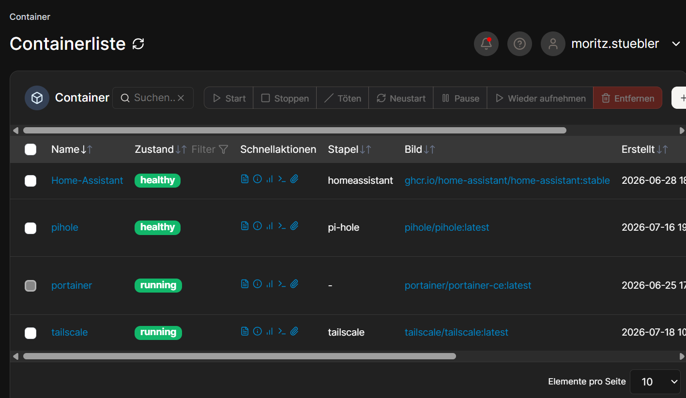

Über das Projekt
2026 bin ich von CasaOS zu Docker umgestiegen. CasaOS bietet ein einfaches AppStore Design wie am SmartPhone, wobei man bei Docker eigene Dateien (docker-compose.yml) braucht, so gesehen ist Docker die fortgeschritterne Variante. Allerdings habe ich, um den Überblick zu behalten, eine Weboberfläche namens Portainer installiert. Ich habe bereits mit Cloudflare Tunneln (besonders bei dem OpenWebRX oder SatDump Auftrag) experimentiert um ein Gerät zuhause im Internet zugänglich zu machen.
Galerie

Dieses Home Assistant Docker Compose nutze ich:
Kopieren und wiederverwenden erlaubt, es müssen aber möglicherweise Details ersetzt werden.
services:
homeassistant:
image: ghcr.io/home-assistant/home-assistant:stable
container_name: Home-Assistant
privileged: true
mem_limit: 8g
cpu_shares: 768
healthcheck:
test: curl -f http://localhost:8123/ || exit 1
network_mode: host
volumes:
- /volume1/docker/homeassistant:/config:rw
- /var/run/dbus:/var/run/dbus:ro
environment:
TZ: Europe/Vienna
restart: on-failure:5
cap_add:
- NET_ADMIN
- NET_RAWDieses PiHole Docker Compose nutze ich:
Kopieren und wiederverwenden erlaubt, es müssen aber möglicherweise Details ersetzt werden.
services:
pihole:
container_name: pihole
image: pihole/pihole:latest
hostname: pihole
restart: unless-stopped
ports:
- "53:53/tcp"
- "53:53/udp"
- "80:80/tcp"
volumes:
- ./etc-pihole:/etc/pihole
- ./etc-dnsmasq.d:/etc/dnsmasq.d
cap_add:
- NET_ADMIN